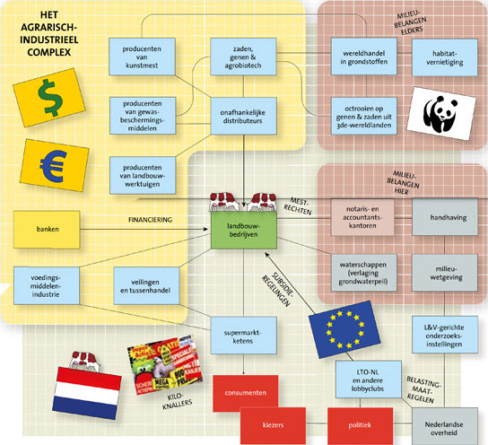

Het agrarisch-industrieel complex

Bedrijven 2023
Bdrijven akkerbouw en tuinbouw
- akkerbouw 23000
- tuinbouw open grond 10000
- tuinbouw onder glas 3000
- grasland 39000
Bedrijven met vee
- rundvee 22000
- varkens 3000
- paarden en pony's 8000
- schapen 8000
- geiten 3000
- kippen 2000
- eenden 0
Dieren 2023
- runderen: 3,8 miljoen
- melk- en fokvee
- melk- en kalfkoeien 1,57 miljoen
- stieren 23000
- overig melk- en fokvee 983000
- vleesvee
- vlees- en weidevee 243000
- vleeskalveren 1.024 miljoen
- melk- en fokvee
- varkens: 10,8 miljoen
- paarden en ponys: 97000
- kippen: 83,6 miljoen
- vleeskuikens: 40,8 miljoen
- leghennen: 42,8 miljoen
- schapen: 839000
- geiten: 647000
- eenden: 581000
- kalkoenen: 588000
In 2020 was de stikstofuitscheiding in dierlijke mest 489 miljoen kilogram. Dat is 15 miljoen kilogram onder het vastgestelde stikstofplafond van 504,4 miljoen kilogram.
Stikstof uitscheiiding per sector:
- melkveesector: 286,5 miljoen kilo (plafond: 281,8 miljoen kilo)
- varkenssector: 91,8 miljoen kilo (plafond: 99,1 miljoen kilo)
- pluimveesector: 54,7 miljoen kilo (plafond: 60,3 miljoen kilo)
De stikstofproblematiek in Nederland wordt niet veroorzaakt door stikstof maar door wetgeving, interpretatie hiervan door rechters en een onwetenschappelijke aanpak.